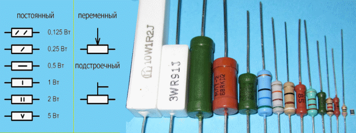
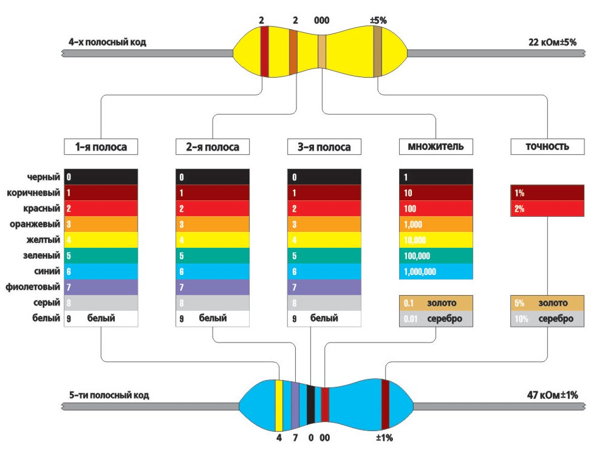
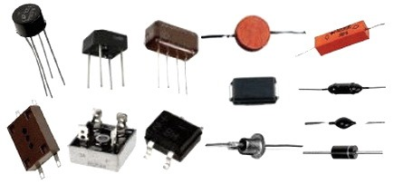
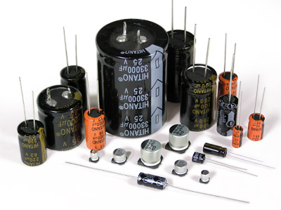
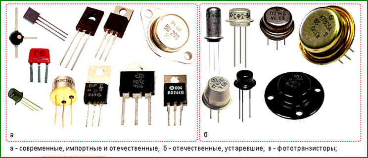
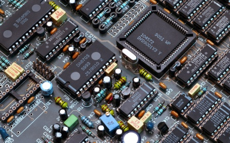

КОМПОНЕНТИ ЕЛЕКТРИЧНИХ СХЕМ
- Напівпровідникові резистори
- Класифікація. Умовні графічні позначення. Маркування


- Напівпровідникові діоди
- Випрямні діоди. Стабілітрони.Світлодіоди. Фотодіоди

- Конденсатори
- Класифікація. Умовні графічні позначення. Маркування

- Біполярні транзистори
- 2 типа транзисторів: p-n-p, n-p-n

- Інтегральні мікросхеми(ІМС)
- Класифікація ІМС. Ступінь інтеграції. Методи створення.

Резистори
Підсилювальні пристрої
Імпульсні пристрої
Цікава інформація
Головна